Procedural Plotter Series
W3 Plot for the plotter
...
W2 Studies (The Map of Algorithmic Geography)
After Week 1 studies, I was interested in working with specific objects rather than a generic head sculpture that I made in blender for last week. Using 3D scan data from my walking route in Providence, I mapped each object in Blender by analyzing its form. The combined scans were then composed into a map, re-tracing the digitally processed objects from my path. Upon creating this map, I began to think about the plotter as a processor of my translated words. I thought about how my trace is interprested by the multiple softwartes that came in between me and the plotter (Blender, Illustrator, and Silhouette Studio), which led me to create the second series where I showed the messages from those softwares on the map as a process of "softwares tracinig my walking track".


W1 Studies
From a single 3D object (head sculpture) I made in Blender, I have attempted to explore various shading methods, rendering, and vectorizations to create 2D images.


Blender rendering examples of the studies (W1-2)

 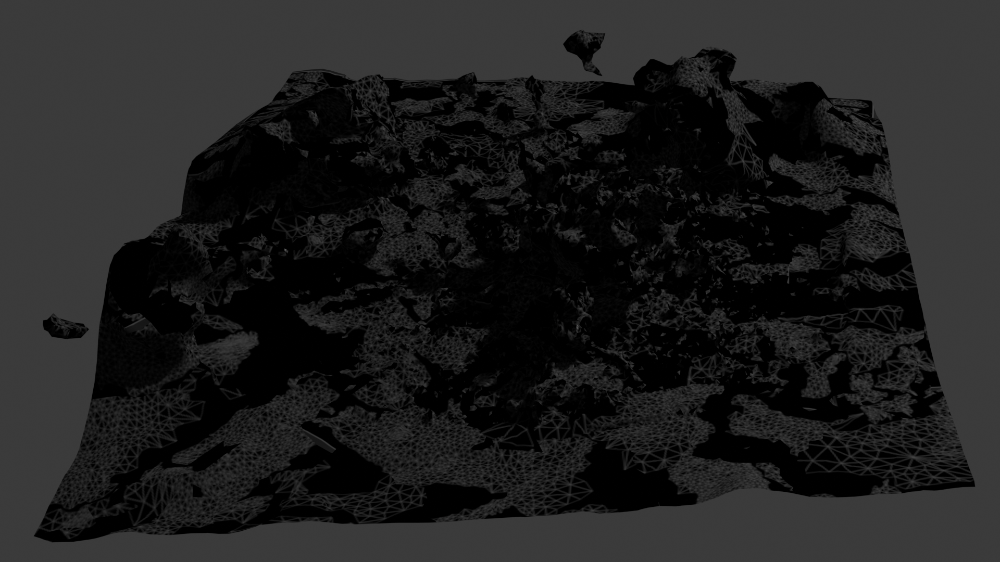
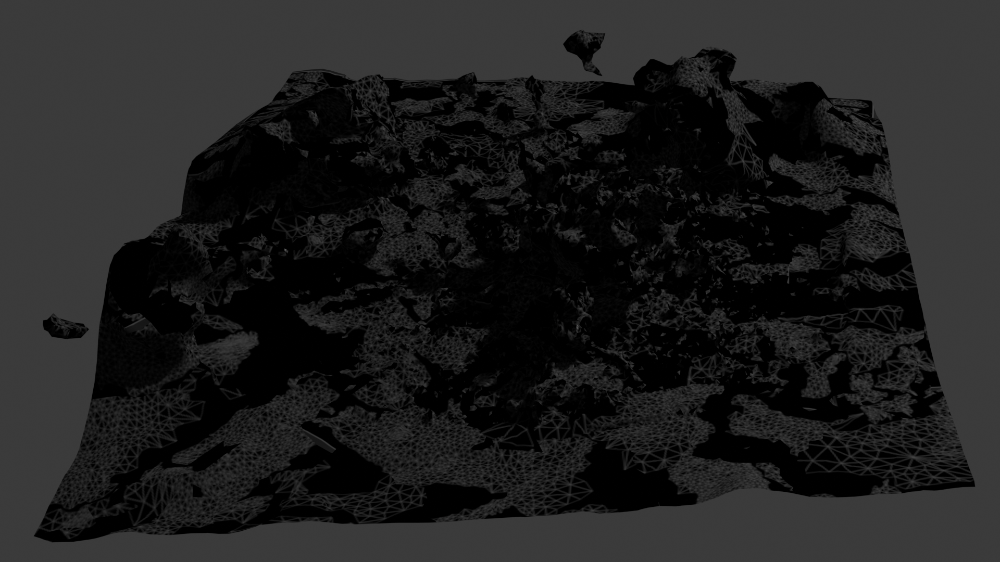
 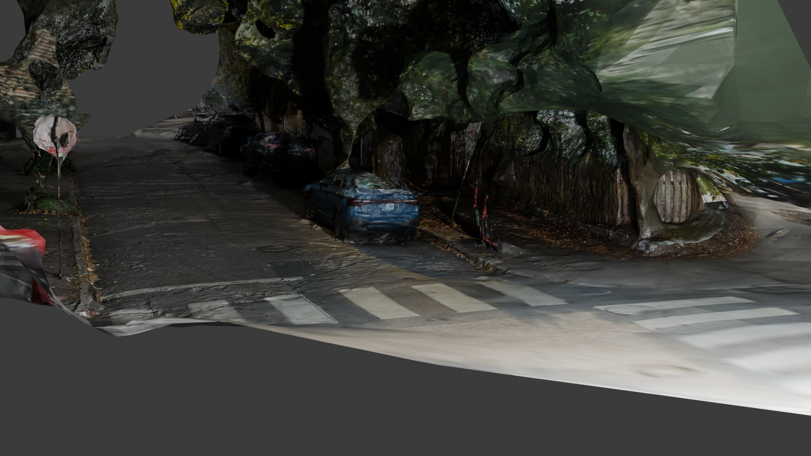
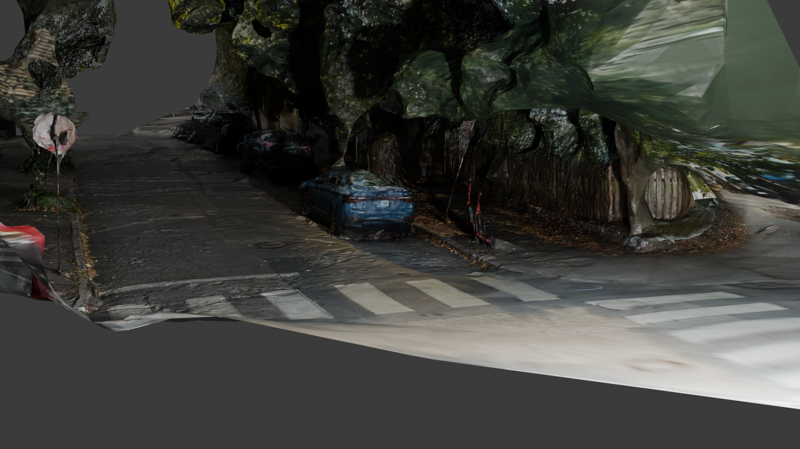

Material Experiments
Tested materials and techniques of plotting, printing, and image making.


Notes
2025-09-16—updated
Future Assignments
Final Works
Overview of completed works in this period.

Studies
Short overview of studies for 2024–2025.

Experiments
Overview of experiments for 2024–2025.

Notes
Notes — ...
Portfolio
No more understanding of the world (Live recording and projection of the sky)
Mission Statement
Coffin, design and installation (collaborative work : Drawing by Constance Wang on the right)


Hole in the colony
Tide
 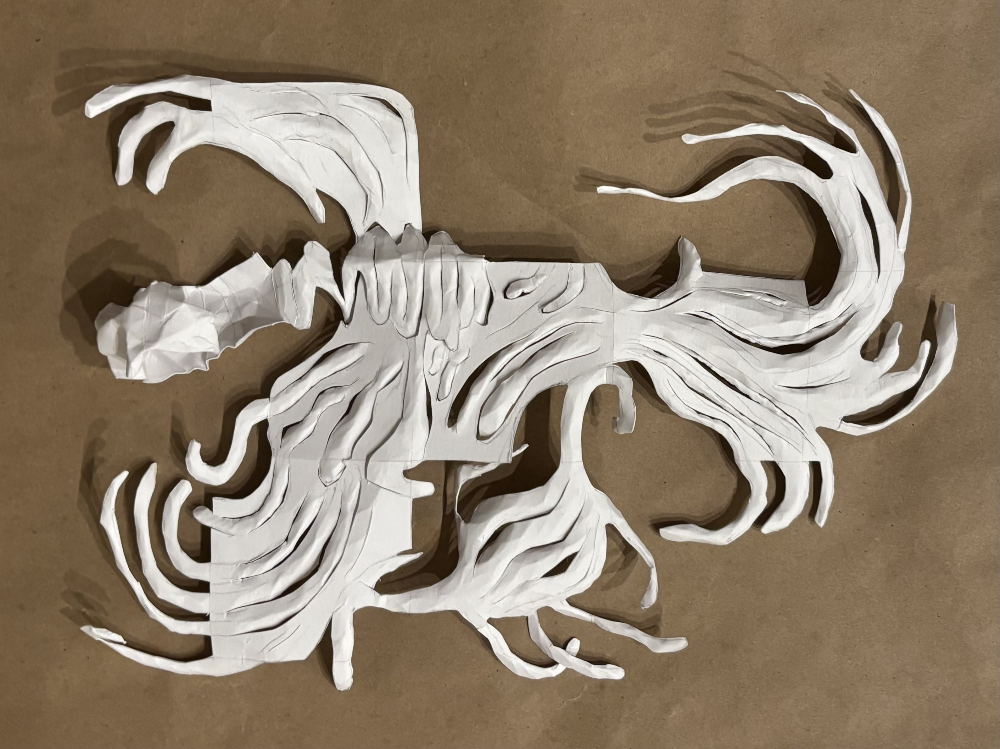
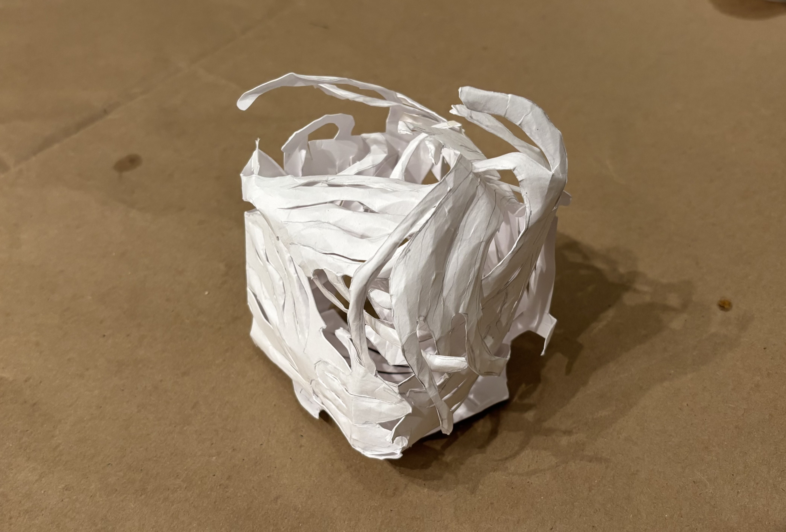
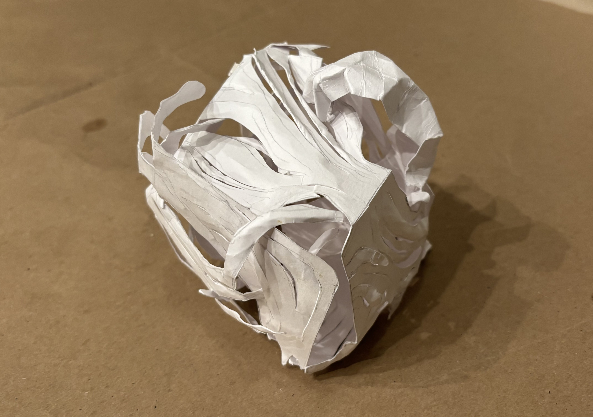
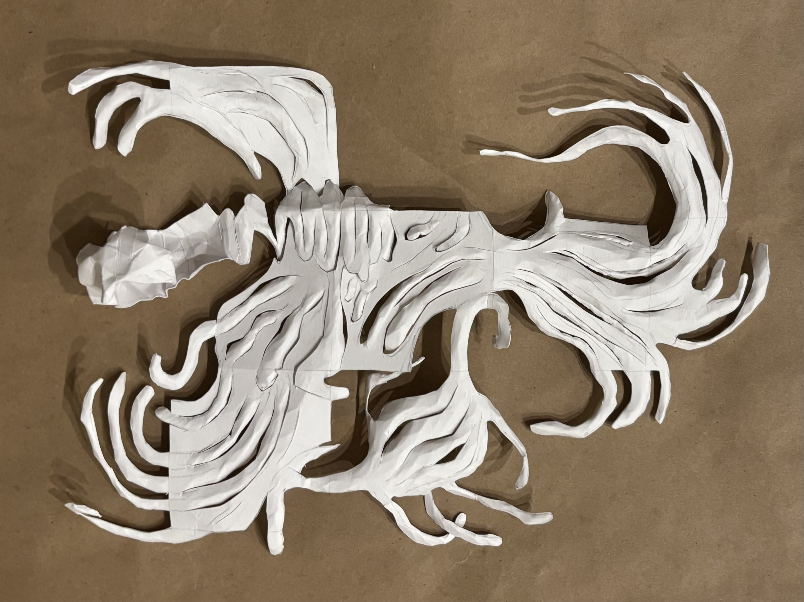
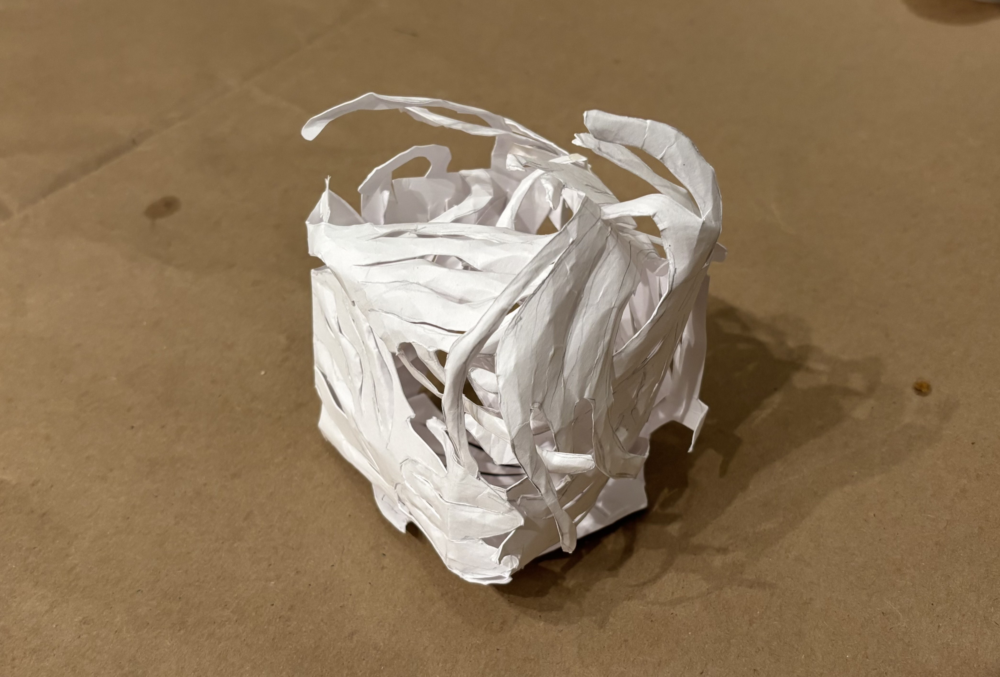
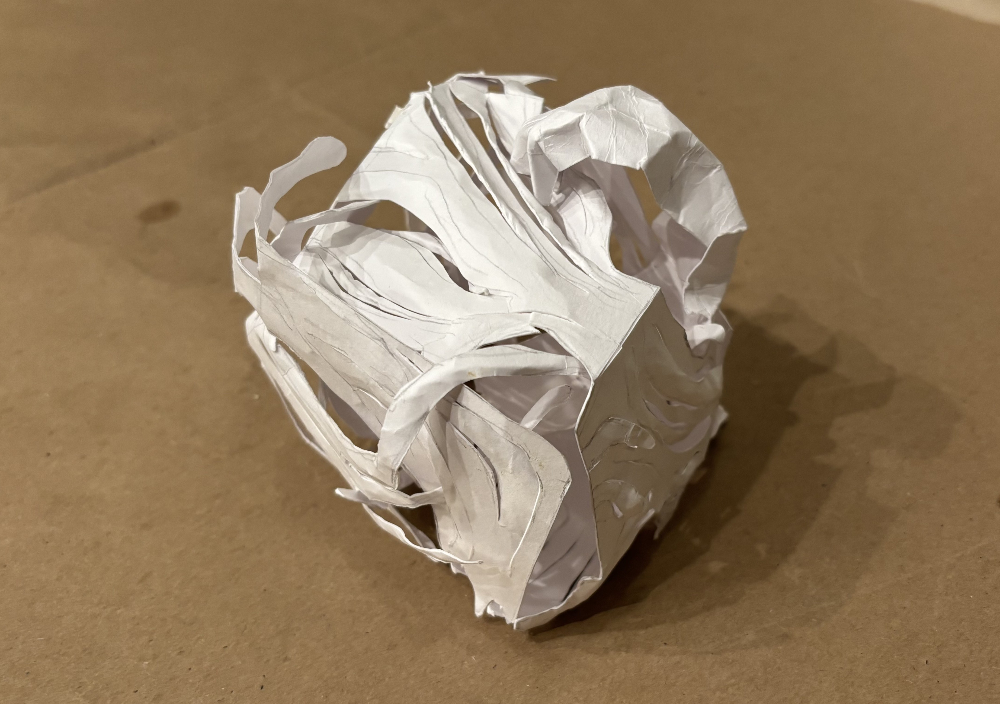
Observational Paintings
Observational Sculptures
 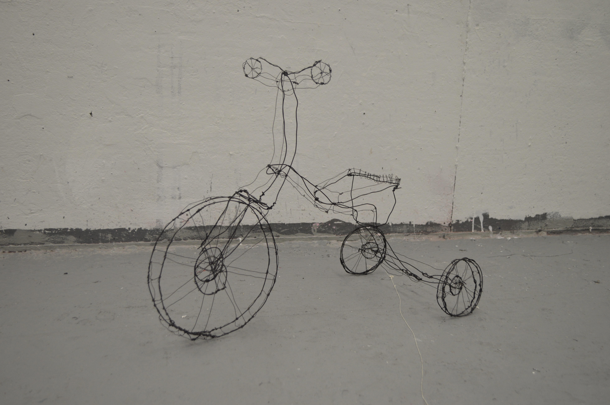
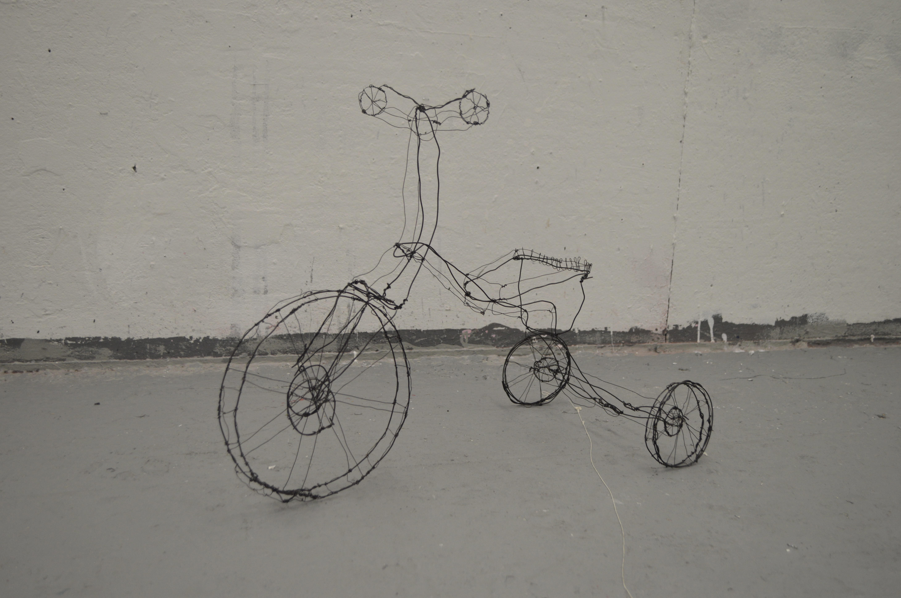